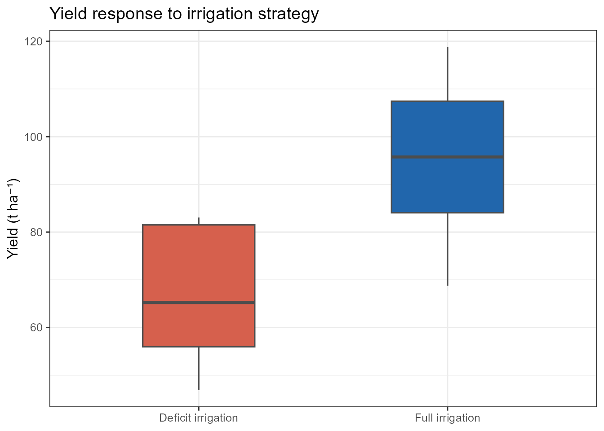
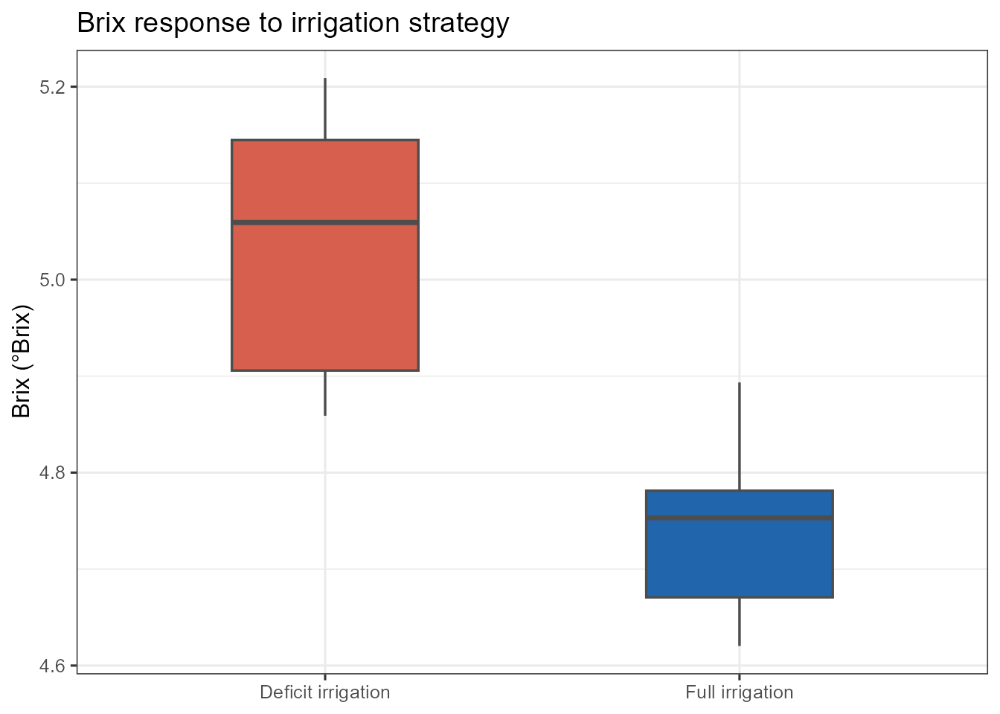
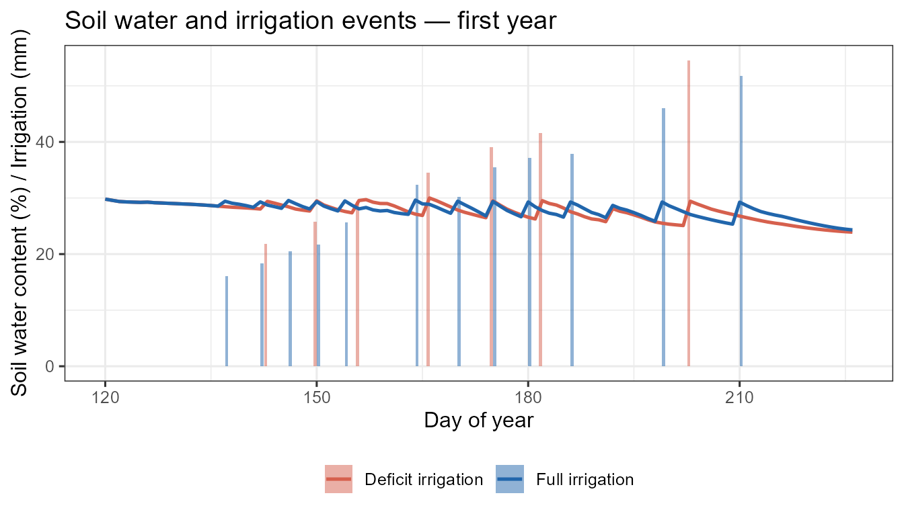

Run a deficit-irrigation scenario with cumba_scenario()
Source:vignettes/cumba-scenario.Rmd
cumba-scenario.RmdWhy cumba_scenario()?
While cumba_experiment() replays an observed irrigation
schedule, cumba_scenario() runs the model in
automatic deficit-irrigation mode. Irrigation is
triggered when, simultaneously:
- the simulated water-stress index (
ws) falls below a phase-specific threshold (wsLevel), and - at least
turnMindays have elapsed since the last irrigation.
The water applied at each event refills the soil to field capacity in the rooted layers.
The irrigationStrategy argument
The irrigation logic is controlled by a single
irrigationStrategy argument — a named list
with one entry per phenological phase:
| Phase | Period |
|---|---|
vegetative |
transplanting → flowering |
reproductive |
flowering → mid-ripening |
ripening |
mid-ripening → harvest |
Each entry is a list with:
-
wsLevel— WSI threshold (0–1). Irrigation fires whenws < wsLevel. -
turnMin— minimum days between consecutive irrigations.
A complete walkthrough on tomatoFoggia
library(cumba)
library(dplyr)
library(ggplot2)
data(tomatoFoggia)
data(cumbaParameters)
weather <- tomatoFoggia$weather
out <- cumba_scenario(
weather = weather,
param = cumbaParameters,
estimateRad = TRUE,
estimateET0 = TRUE,
transplantingDOY = 120,
irrigationStrategy = list(
vegetative = list(wsLevel = 0.5, turnMin = 4),
reproductive = list(wsLevel = 0.5, turnMin = 4),
ripening = list(wsLevel = 0.5, turnMin = 4)
),
fullOut = FALSE
)
#> CUMBA running in deficit irrigation mode
#> 🍅 running experiment 1 in site Foggia and year 2005
#> 🍅 running experiment 2 in site Foggia and year 2006
#> 🍅 running experiment 3 in site Foggia and year 2012
#> 🍅 running experiment 4 in site Foggia and year 2013
#> 🍅 running experiment 5 in site Foggia and year 2014
#> 🍅 running experiment 6 in site Foggia and year 2015
#> 🍅 running experiment 7 in site Foggia and year 2016
#> 🍅 running experiment 8 in site Foggia and year 2017
#> 🍅 running experiment 9 in site Foggia and year 2018
#>
head(out)
#> site year experiment doy p irrigation stage swc yield
#> 1 Foggia 2005 1 120 0 0 post-transplanting 29.80184 0
#> 2 Foggia 2005 1 121 0 0 post-transplanting 29.58283 0
#> 3 Foggia 2005 1 122 0 0 post-transplanting 29.37420 0
#> 4 Foggia 2005 1 123 0 0 post-transplanting 29.30290 0
#> 5 Foggia 2005 1 124 0 0 post-transplanting 29.25984 0
#> 6 Foggia 2005 1 125 0 0 post-transplanting 29.22264 0
#> brix
#> 1 0
#> 2 0
#> 3 0
#> 4 0
#> 5 0
#> 6 0Compare two irrigation strategies
Define a full-irrigation and a deficit strategy, then compare yield and Brix at harvest across all site-years:
full_irr <- list(
vegetative = list(wsLevel = 0.7, turnMin = 4),
reproductive = list(wsLevel = 0.7, turnMin = 4),
ripening = list(wsLevel = 0.6, turnMin = 4)
)
deficit <- list(
vegetative = list(wsLevel = 0.4, turnMin = 4),
reproductive = list(wsLevel = 0.4, turnMin = 4),
ripening = list(wsLevel = 0.3, turnMin = 4)
)
run_strategy <- function(strategy, label) {
cumba_scenario(
weather = weather,
param = cumbaParameters,
irrigationStrategy = strategy,
transplantingDOY = 120,
estimateRad = TRUE,
estimateET0 = TRUE,
fullOut = FALSE
) |>
mutate(strategy_label = label)
}
scen <- bind_rows(
run_strategy(full_irr, "Full irrigation"),
run_strategy(deficit, "Deficit irrigation")
)
#> CUMBA running in deficit irrigation mode
#> 🍅 running experiment 1 in site Foggia and year 2005
#> 🍅 running experiment 2 in site Foggia and year 2006
#> 🍅 running experiment 3 in site Foggia and year 2012
#> 🍅 running experiment 4 in site Foggia and year 2013
#> 🍅 running experiment 5 in site Foggia and year 2014
#> 🍅 running experiment 6 in site Foggia and year 2015
#> 🍅 running experiment 7 in site Foggia and year 2016
#> 🍅 running experiment 8 in site Foggia and year 2017
#> 🍅 running experiment 9 in site Foggia and year 2018
#> CUMBA running in deficit irrigation mode
#> 🍅 running experiment 1 in site Foggia and year 2005
#> 🍅 running experiment 2 in site Foggia and year 2006
#> 🍅 running experiment 3 in site Foggia and year 2012
#> 🍅 running experiment 4 in site Foggia and year 2013
#> 🍅 running experiment 5 in site Foggia and year 2014
#> 🍅 running experiment 6 in site Foggia and year 2015
#> 🍅 running experiment 7 in site Foggia and year 2016
#> 🍅 running experiment 8 in site Foggia and year 2017
#> 🍅 running experiment 9 in site Foggia and year 2018
#>
# Last row per (strategy × site × year) = harvest day
harvest <- scen |>
group_by(strategy_label, site, year) |>
slice_tail(n = 1) |>
ungroup()
pal <- c("Full irrigation" = "#2166ac", "Deficit irrigation" = "#d6604d")
ggplot(harvest, aes(strategy_label, yield, fill = strategy_label)) +
geom_boxplot(width = 0.45, outlier.shape = 21, outlier.size = 2,
colour = "grey30", linewidth = 0.6) +
scale_fill_manual(values = pal) +
labs(y = "Yield (t ha⁻¹)", x = NULL,
title = "Yield response to irrigation strategy") +
theme_bw(base_size = 12) +
theme(legend.position = "none")
ggplot(harvest, aes(strategy_label, brix, fill = strategy_label)) +
geom_boxplot(width = 0.45, outlier.shape = 21, outlier.size = 2,
colour = "grey30", linewidth = 0.6) +
scale_fill_manual(values = pal) +
labs(y = "Brix (°Brix)", x = NULL,
title = "Brix response to irrigation strategy") +
theme_bw(base_size = 12) +
theme(legend.position = "none")
Daily soil-water and irrigation dynamics
scen_yr1 <- scen |> filter(year == min(year))
ggplot(scen_yr1, aes(doy)) +
geom_col(aes(y = irrigation, fill = strategy_label),
position = "dodge", width = 0.9, alpha = 0.5) +
geom_line(aes(y = swc, colour = strategy_label), linewidth = 0.9) +
scale_colour_manual(values = pal, name = NULL) +
scale_fill_manual(values = pal, name = NULL) +
labs(x = "Day of year",
y = "Soil water content (%) / Irrigation (mm)",
title = "Soil water and irrigation events — first year") +
theme_bw(base_size = 12) +
theme(legend.position = "bottom")
Notes
-
cumba_scenario()does not require anirrigation_df; the schedule is generated internally from the stress thresholds. - The
yieldcolumn in the short output is in t ha⁻¹. - Setting
fullOut = TRUEreturns all internal state variables (Kc, carbon pools, flowering state, soil water per layer, etc.). - The
irrigationStopCycleargument (default100) sets the phenological cycle completion percentage beyond which no further irrigation is applied — useful for regulated-deficit ripening.